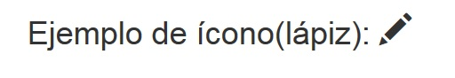

Bootstrap incorpora un conjunto de íconos mediante una fuente especial. Para poder utilizar estos íconos debemos agregar a nuestro proyecto la carpeta fonts provista por Bootstrap.
Esta carpeta tiene una serie de archivos llamados "glyphicons-halflings-regular" con distintas extensiones que son interpretados por distintos navegadores.
Para incorporar un ícono en nuestra página debemos disponer el elemento <span> inicializando la clase que corresponde:
<!DOCTYPE html>
<html>
<head>
<title>Prueba de Bootstrap</title>
<link href="css/bootstrap.min.css" rel="stylesheet">
<meta name="viewport" content="width=device-width, initial-scale=1">
</head>
<body>
<div class="container">
<h1>Ejemplo de ícono(lápiz): <span class="glyphicon glyphicon-pencil"></span></h1>
</div>
</body>
</html>
Como resultado tenemos en la pantalla:
Debemos inicializar la marca span con las clases: glyphicon y glyphicon-pencil (en el caso que necesitemos mostrar un lápiz)
Se dispone de 200 íconos distintos para ser empleados en nuestras páginas.
Podemos mostrar íconos dentro de distintos elementos de HTML (botones, hipervínculos etc.
Como se trata de una fuente el tamaño del ícono se adecua al contexto donde se lo insertó: un título, un párrafo etc.
Veamos como ejemplo un grupo de botones mostrando un ícono cada uno de ellos:
<!DOCTYPE html>
<html>
<head>
<title>Prueba de Bootstrap</title>
<link href="css/bootstrap.min.css" rel="stylesheet">
<meta name="viewport" content="width=device-width, initial-scale=1">
</head>
<body>
<div class="container">
<div class="btn-group btn-group-lg">
<button type="button" class="btn btn-default"><span class="glyphicon glyphicon-headphones"></span></button>
<button type="button" class="btn btn-default"><span class="glyphicon glyphicon-volume-up"></span></button>
<button type="button" class="btn btn-default"><span class="glyphicon glyphicon-volume-down"></span></button>
</div>
</div>
</body>
</html>
Luego podemos ver: